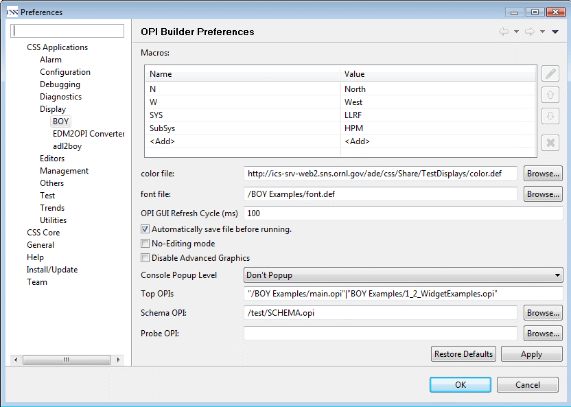
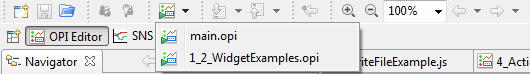

All the preferences of BOY can be set in the preference page, which can be opened via menu: CSS->Preferences...->CSS Applications->Display->BOY.

The path of the color definition file for Color Macro
. The path can be a workspace path, for example, /BOY Examples/color.def, a local
file system path, for example, C:\Users\xihui\color.def, a URL path, for example,
http://www.xxx.com/main.opi
or a platform URL path platform:/plugin/org.my.plugin/resources/color.def. Platform
URL path is used to locate resources inside a plugin.
Tip: In BOY, without particular declaration,
you can use these four type of paths at everywhere if a path is needed.
For example, if you set a URL path http://www.xxx.com/main.opi for the top OPIs
preference, you will be able to run this OPI directly from Top OPIs button.
If you set a URL Path for the image wigdget, you will be able to display image from web directly.
Preference key: color_file
The font definition file for Font Macro.
Preference key: font_file
The path which is used to search OPI files if the given OPI path is a relative path
and it doesn't exist on the made up absolute path neither. For example, you can put an OPI file name abc.opi or
a relative path abc/def/my.opifor
Open OPI Action, Top OPIs, Schema OPI and so on. If this OPI file cannot be found as a relative path to the OPI file,
it will search the OPI Search Path and return the first one found on the search path. It supports workspace path,
local file system path and URL path. The pathes are separated by the delimiter |, for example
/BOY Examples/|C:\users\5hz\Desktop\|http://ics-srv-web2.sns.ornl.gov/opi/
Preference key: opi_search_path
The OPIs which will be listed in the "Top OPIs" drop down button.
To add macros input for the OPI, append "macroName=macroValue" to path and separate them by commas.
To give a different menu text rather than using file name, append a macro "Alias=The Menu Name".
It is also possible to specify the OPI open position by giving macro Position.
The available positions are:
Left: Left ViewRight: Right ViewTop: Top ViewBottom: Bottom ViewDefault_View: Default ViewDetached: Detached ViewIf macro Position is not set or is not in one of above positions, it will be opened in editor area.
Multiple top OPIs are separated by |. For example:
"/BOY Examples/main.opi", "macro1 = hello", "macro2 = hello2", "Alias=BOY Examples", "Position=Left"| "BOY Examples/1_2_WidgetExamples.opi"

Preference key: top_opis
Preference key: probe_opi
OPI files are not allowed to be opened from OPI editor. They will always be opened from OPI runtime.
Preference key: no_edit
Disable the advanced graphics capability such as Pattern and transparency. If this is checked, some 3D widgets will be displayed in 2D effect.
Preference key: disable_advanced_graphics
If this is checked,system outputs will be redirected to BOY Console. For example, the following codes will print "Hello, World!" to BOY Console.
//JavaScript Code
importPackage(Packages.java.lang)
System.out.println("Hello, World!")
#Python code print "Hello, World"
Preference key: display_system_output
Preference key: schema_opi
The file in editing will be automatically saved before running it after you
hit the run button or pressed Ctrl+G.
Preference key: auto_save
The widgets that should be hidden from palette. This entry has no GUI entry in
preference page because it is usually a site wide preference. For example:
hidden_widgets=org.csstudio.opibuilder.widgets.ActionButton|org.csstudio.opibuilder.widgets.TextInput
Preference key: hidden_widgets
Global macros which are available for all OPIs in this CSS instance.
Preference key: macros
The shortest refresh cycle of OPI GUI in millisecond. If a PV is updated faster than this cycle, it will be throttled. Specify this to longer will help to reduce CPU usage, but it may affect user's experience and may lose some swift changs if refresh cycle is longer than PV updating cycle.
Preference key: opi_gui_refresh_cycle
In which condition should the console popup.
Don't Popup, BOY console will never automatically popup.Only Info, BOY Console will only popup if there is regular information coming to console.Error, Warning and Info, BOY Console will popup whenever there is error, warning or
regular information coming to console.Preference key: popup_console
The path for searching Python module files. It only accept workspace path and
local file system path. Paths are separated by |. For example:
/MyPyLib/MyModule1|C:\Python27\Lib
Preference key: python_path
The default preferences can be set in plugin_customization.ini file
which is located in the root of the "Product" plugin directory or jar file.
It is ideally used to provide site-specific default preferences. For example, you can change
the default BOY preferences in this file with corresponding preference keys:
org.csstudio.opibuilder/color_file=http://your_site.gov/color.def org.csstudio.opibuilder/font_file=http://your_site.gov/font.def org.csstudio.opibuilder/opi_gui_refresh_cycle=100 org.csstudio.opibuilder/no_edit=true org.csstudio.opibuilder/macros="N","North"|"W","West"|"SYS","LLRF"|"SubSys","HPM" #popup console level, it can be NO_POP, INFO, or ALL org.csstudio.opibuilder/popup_console=NO_POP
You can also give a different customization file with the command line option
-pluginCustomization when starting CSS.